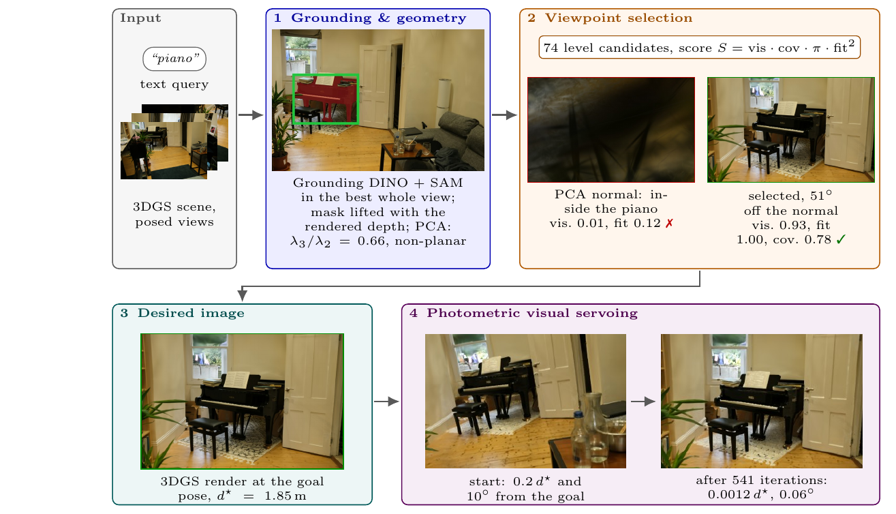
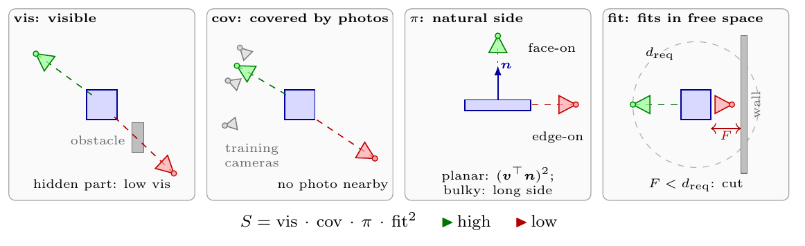
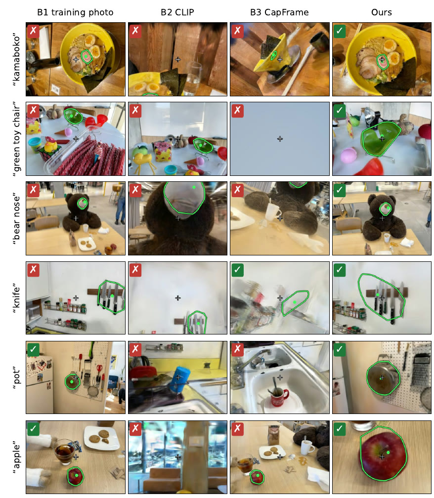
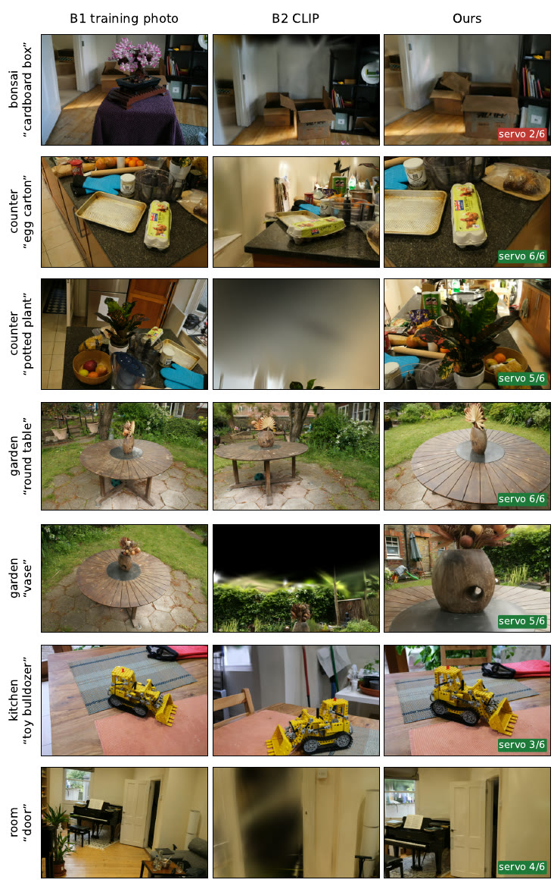
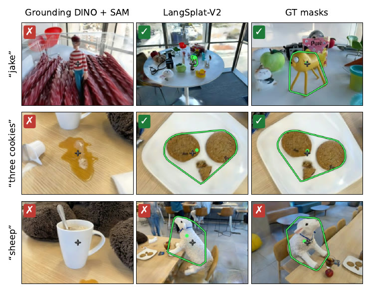

From Words to Desired Images
Language-specified goal views for visual servoing in Gaussian Splatting scenes
International Artificial Intelligence Center of Morocco – Ai movement, Mohammed VI Polytechnic University

Abstract
Visual servoing needs a desired image, which is normally captured or chosen by an operator. We generate it from a text query in a scene reconstructed with 3D Gaussian Splatting. The queried object is grounded with an open-vocabulary detector and a promptable segmenter, lifted to 3D with the rendered depth, and summarised by its centroid, extent and dominant plane. A geometric viewpoint selection renders candidate views and scores their visibility, render reliability, a frontality or broadside prior and whether the whole object fits in the image with the camera in free space; the render at the chosen pose is the desired image. On the labelled queries of LERF-OVS, our desired images are good views more often than the best training photograph, CLIP render-and-score and CapFrame, and a photometric visual servo reaches them more often than any baseline's.
Finding the desired image
Each dashboard follows one query. The camera starts at a training photo and is driven to the selected viewpoint by a six-feature servo (object centre, viewing direction, distance and roll). Top: current render, 3-D view of the object cloud with its PCA normal and the selected direction, and the desired image. Bottom: centring error, orientation and distance errors, and camera velocity.
Viewpoint selection

The 74 candidates for “piano” with their scores, then the selected view.
Reaching it with photometric visual servoing
The desired image is meant for any image-based servo. Here a photometric servo, which sees only images, starts 0.2 d* and 10° away from the goal and converges to it.
Results
LERF-OVS, 67 text queries scored against ground-truth 3D objects (% of queries; servo: % of runs).
| method | good view | whole in frame | centred | level | servo small | servo large |
|---|---|---|---|---|---|---|
| Best training photo | 21 | 70 | 30 | 67 | 70 | 71 |
| CLIP render-and-score | 9 | 36 | 19 | 100 | 59 | 56 |
| CapFrame | 12 | 66 | 31 | 24 | 66 | 60 |
| Ours | 30 | 60 | 48 | 100 | 85 | 76 |



Citation
@article{boughdaoui2026words,
title = {From Words to Desired Images: Language-Specified Goal Views for Visual Servoing in Gaussian Splatting Scenes},
author = {Boughdaoui, Mustapha and Alj, Youssef},
journal = {Under review},
year = {2026}
}